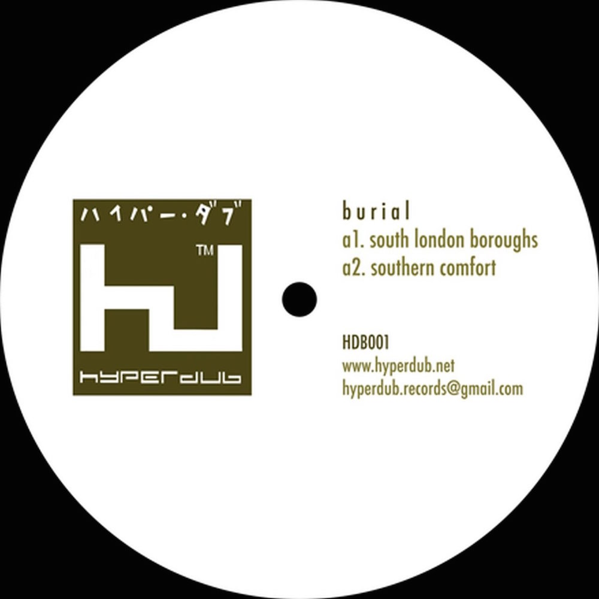
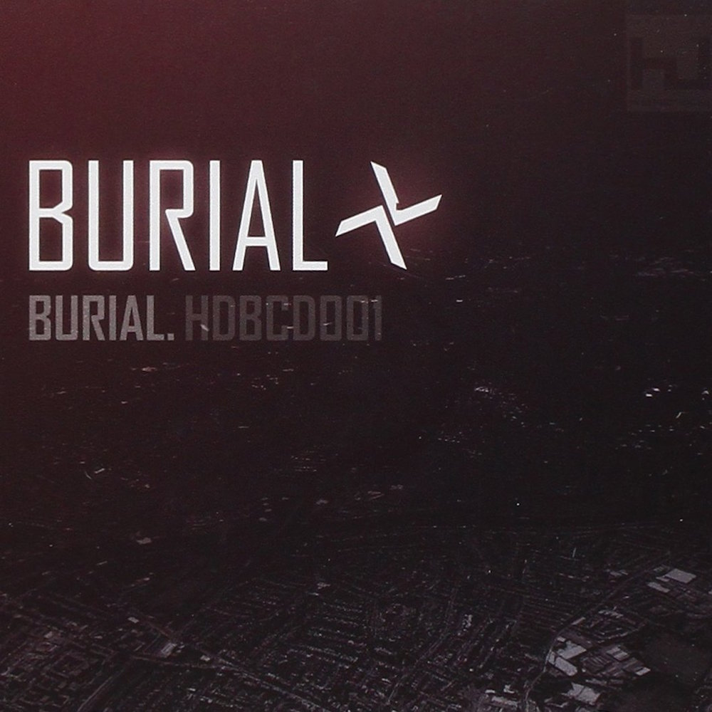
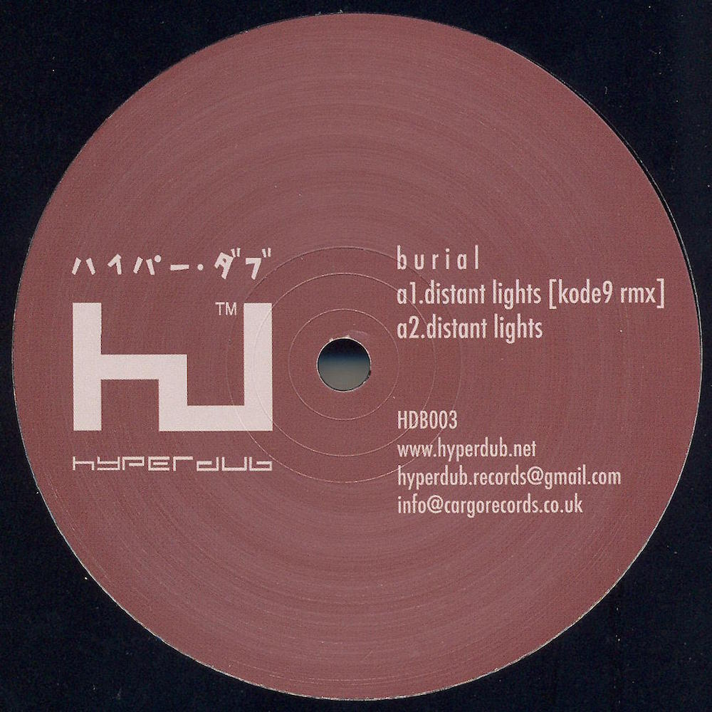
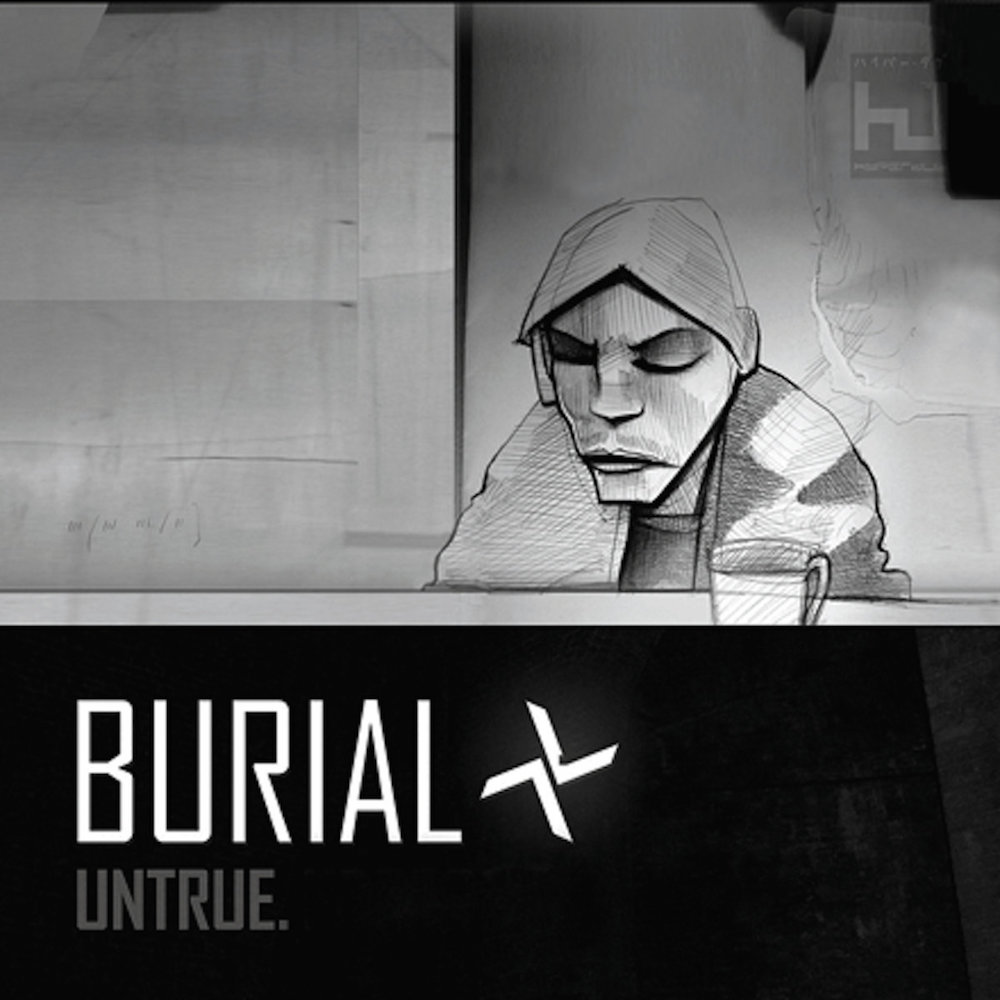
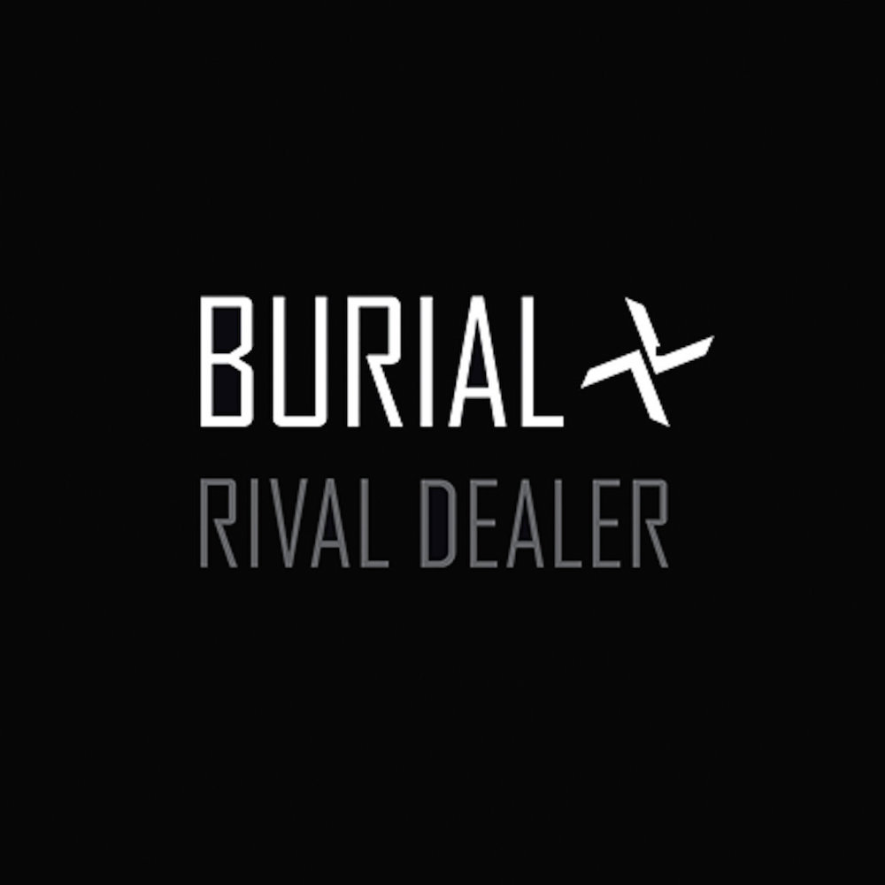

William Emmanuel Bevan
William Emmanuel Bevan, known by his recording alias Burial, is an electronic recording artist from South London. Bevan was the first artist signed to Kode9's electronic label Hyperdub, and initially remained anonymous. Drawing inspiration from 90's UK rave music and pirate radio culture, he released his eponymous debut album in 2006, for which he won widespread acclaim, including the album of the year award by The Wire.
Burial's second album, Untrue, was released to critical acclaim in 2007. In 2008, Bevan's identity was revealed by The Independent. In recent years, he has gone on to collaborate with artists such as Four Tet, Massive Attack, Thom Yorke and Zomby in addition to having released a series of acclaimed long-form EPs. (Source: Wikipedia)
South London Boroughs
Released: May 16, 2005
1. South London Buroughs
2. Southern Comfort
3. Broken Home
4. Nite Train
Burial
Released: May 15, 2006
1. Untitled +
contains a sample of Benicio del Toro's dialogue from the film 21 Grams
2. Distant Lights +
contains a sample from "Emotion" by Destiny's Child
3. The Spaceape feat. The Spaceape +
Spaceape's lyrics are almost idential to his lyrics on "Victims", from Memories of the Future with Kode9
4. Wounder
5. Night Bus +
contains a vocal sample from "Praise Ye Jah" by Sizzla
6. Southern Comfort
7. U Hurt Me +
contains a sample from "Hunger", from the Black Hawk Down soundtrack (2002)
8. Gutted +
contains a sample of Forest Whitaker's dialogue from the film .Ghost Dog: The Way of the Samurai (1999)
contains a vocal sample from "My One And Only Love" by Bitty McLean
9. Forgive +
contains a sample from "An Ending (Ascent)" by Brian Eno
10. Broken Home +
contains a sample from "Dry Cry" by Sizzla
11. Prayer +
contains a drum sample from "Sometimes I Cry" by Les McCann
12. Pirates +
contains a sample of Sean Penn's dialogue from the film 21 Grams (2003)
13. Untitled +
contains a sample of Will Patton's dialogue from the film The Mothman Prophecies (2002)
Distant Lights
Released: August 26, 2006
1. Distant Lights (Kode9 Rmx)
2. Distant Lights
3. Pirates
4. Gutted
Untrue
Released: November 5, 2007
1. Untitled +
contains samples of Inland Empire and portions of the score for Alien 3, composed by Elliot Goldenthal
2. Archangel +
contains samples of "One Wish" by Ray J and portions of the score for Metal Gear Solid 2: Sons of Liberty, composed by Harry Gregson-Williams
3. Near Dark
4. Ghost Hardware +
contains samples of a live acapella version of "Beautiful" by Christina Aguilera (Originally broadcast on Saturday Night Live in 2004), "Freedom to Decide" by Norihiko Hibino, "Turn the Page" by Bobby Valentino, Girl with a Pearl Earring, and Metalheadz: Talkin' Headz
5. Endorphin +
contains samples of "Lost Carol" by Akira Yamaoka and Mary Elizabeth McGlynn
6. Etched Headplate +
contains samples of "Ready For Love" by India.Arie, "Angel" by Amanda Perez, "You Got Me" by The Roots featuring Erykah Badu and Eve, and Bullet Boy DVD cast interviews
7. In McDonalds +
contains samples of "I Refuse" by Aaliyah
8. Untrue +
contains samples of "Resentment" by Beyoncé, "Whisper" by Ernie Halter and "Angel" by Sarah McLachlan
9. Shell of Light +
contains samples of "Cruisin" by D'Angelo, "Whisper" by Ernie Halter, and "Promise" by Ciara
10. Dog Shelter
11. Homeless
12. UK
13. Raver
Rival Dealer
Archangel
Hyperdub. 2007
CD-R
Ghost Hardware
Hyperdub. December 10, 2007
Digital
Moth / Wolf Cub
with Four Tet
Text. May 18, 2008
12"
Ego / Mirror
with Four Tet and Thom Yorke
Text. March 21, 2011
12"
Four Walls / Paraside Circus
with Massive Attack
The Vinyl Factory / Inhale Gold. Oct 24, 2011
12"
Nova
with Four Tet
Text. March 26, 2012
12"
"Versus". Warrior Dubz (2006)
"Unite". Box of Dub: Dubstep and Future Dub (2007)
"Fostercare". 5: Five Years of Hyperdub (2009)
"Vial". (Breakage featuring Burial) Foundation (2010)
"Prophecy". (El-B featuring Burial) Nu Levels (2010)
"High Road". (with Dusk and Blackdown) High Road (2012)
"Lambeth". Hyperdub 10.4 (2014)
"Sweetz". (Zomby featuring Burial) Ultra (2016)
Blackdown - "Crackle Blues" (Burial Remix). 2006
Jamie Woon - "Wayfaring Stranger" (Burial Remix). 2007
Bloc Party - "Where Is Home?" (Burial Remix). 2007
Thom Yorke - "And It Rained All Night" (Burial Remix). 2007
Commix - "Be True" (Burial Remix). 2008
Tracks, and artists referenced by Burial as influences, in interviews or other sources
D'Cruze
Lonely
Teebee
Let Go
Foul Play
Being With You (Remix)
Alex Reece
Digital
Goldie
DJ Hype
Dillinja
El-B
D-Bridge
DJ Krystl
Steve Gurley
Reinforced
Paradox
Source Direct
March 21, 2006. BlackDownSoundBoy (interviewed by Martin Clark)
December, 2007. The Wire Magazine Unedited Transcript (interviewed by Mark Fisher)
July, 2012. Fact Magazine Interview
The Premature Burial: Burial the Pallbearer vs Burial The Innovator (Rouge's Foam)
Burial's Note of Appreciation, January 2014
Burial turns 10: The roots of a dubstep masterpiece, by John Twells (Fact Magazine)
The Hardcore Continuum, by Simon Reynolds (The Wire Magazine)